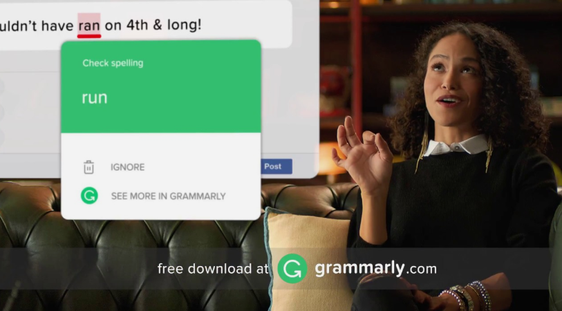
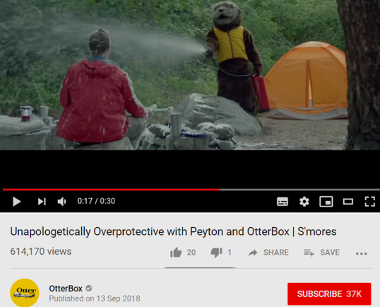
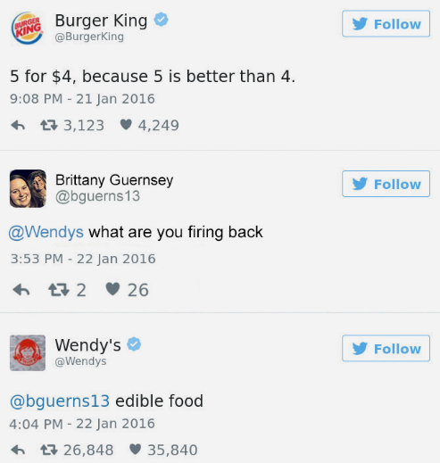
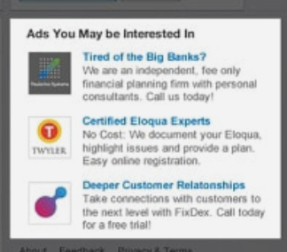
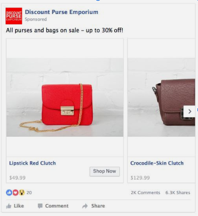
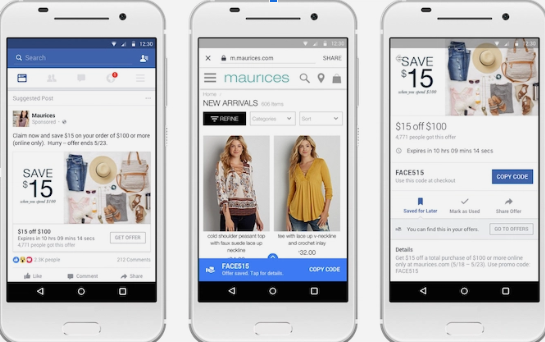
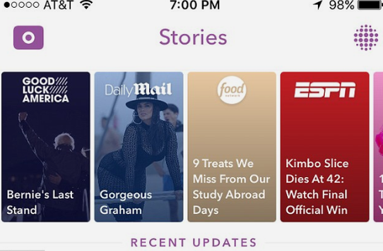
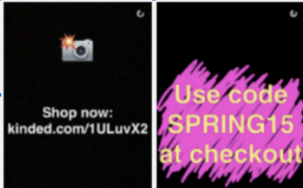
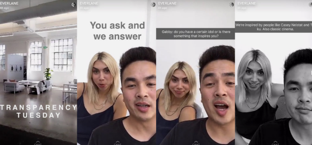
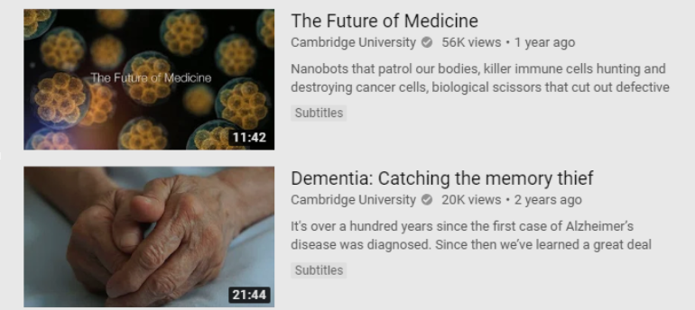

Rebecca Sulisufi
As YouTube has a range of uses and benefits which for businesses, can compliment their other social media channels. They can post content from just pure promotions on their channel, to advertisements, to tutorials, and even just fact videos. All of which can be used by businesses to promote their brand.
Youtube has a lot of direct advertising on its website, it has many promoted and paid adverts along the sidebars next to ‘recommended videos’ and also before videos on YouTube, there is a short advert which you are required to watch for 5 seconds, so even if you're not interested in what the ad contains, you have to watch it for a minimum of 5 seconds, so you are at least now aware of that business in the ad.
Businesses also pay certain figures on YouTube to promote their products discreetly in their videos. So if someone were doing a makeup tutorial, a make-up business may pay them, to mention their products in their makeup video. Same applies for something like videos games, a company may send games to figures on YouTube for free, so people become more aware of their brand.
 Youtube can be used to provide special offers in their adverts. Before videos, adverts are played, where brands have around a minute to promote their brand. However, some brands use this opportunity to tell customers about any promotions that they currently have. personally, I may have seen over 50 Grammarly adverts on YouTube, with just a general overview of their service, or a promotion, like student discounts, or just overall discounts.
When having to answer complicated questions on a product that a business is selling, especially if it is a hands-on product, it may be simpler to explain it in a video demonstration/tutorial rather than replying to each customer individually in an email/tweet where they can't really physically see how to use the product. If a business helps their customers with tutorials and so on, providing more customer service, customers won't have to go out of their way to find answers but instead, know that the business is well prepared to deal with any questions that customers have.
For example, for a business which is mainly focused on a physical product, they could use YouTube to show their products being used! This is extremely important for all types of businesses but specifically those who are online-based only and have no other way of demonstrating their product. Youtube can also be used for demonstrating expertise. By providing videos giving expertise, customers are more likely to move towards your brand and your product. PlayStation is typically famous for this, they upload videos on YouTube featuring montages from their games, but specifically have their logo in the corner of the screen at all times, so users know where this video came from, and who the games/services are provided by.
 By businesses providing humorous content, people are more likely to remember that ad and will spread by the word-of-mouth. One business, OtterBox, provides funny ads. In one of their ads, they had a bear dressed in a waistcoat spraying a fire extinguisher over a man holding his phone. The point of the advert was to show that their phone cases can survive anything. The point is the video was so wacky that it stays in the customer's mind, and they'll spread the news about this funny video they saw, and they might even buy the product to test if it really can ‘survive anything’.
According to Omnicore, 62% of Youtube users are male. With men typically watching strategy videos, or football, and women apparently watching beauty videos. In regards to age, 35+ are the fastest growing YouTube demographics. ¾ older users use YouTube for nostalgia and not just tutorials or news. Millennials prefer YouTube over traditional television and 60% of all people prefer YouTube to live television. In 2018, 78% of YouTube users had an annual household income of under £14k showing that people from lower-income backgrounds are more likely to use YouTube.
Twitter has a range of ways to post content, ranging from posting a video on the app, posting images, even short tweets, or paying to promote their tweets or hashtags on Twitter to gain more publicity.
On Twitter, there is a lot of direct advertising, businesses can pay for their tweets to reach a wider number of viewers. Twitter advertisements work like bidding. The company will prepare the message they want to send and the result they expect from this, for example, if they want a bigger follow count on Twitter or more traffic sent to their website. Then the company will set a price for each interaction, (new follow/click to the website) and then ads will be launched based on that
Businesses can also pay high profile figures to promote their products in the same way YouTube does. The business will pay a user to indirectly promote their product in one of their tweets, and the followers of that person may be influenced by the tweet and may go on to buy the product, or at least check it out.
Businesses on Twitter can post tweets with details on certain offers they are having, or even post a link to a webpage containing more detail. They can then pay to promote this tweet, allowing more people to see the tweet and become more aware of the rand. Tweets that have been promoted will display that it is a promoted tweet as underneath it, it will say ‘Promoted by x’.
Voxi deals with customers in a calm way, no matter what the complaint, or the language used by the customer, they will reply in a clear, calm and concise way. In this example, VOXI ends the age discrimination accusations by explaining why their phone plan is only for under 30s. VOXI is aimed specifically for under 30s, due to the fact that some may not be financially stable at that stage to pay a massive phone bill. VOXI is a partner with Vodafone and there are similar plans available for over 30s on Vodafone.
Twitter pages can be used by companies to provide customers with information. For example, this tweet by Monzo, informs users on how Monzo actually can help you plan ahead, and how to actually use certain features in the app that some people may be unfamiliar using.
 Businesses can use numerous methods to provide humorous content throughout their social media accounts. On twitter, companies usually depreciate and argue with other companies to make them stand out, even if the product is not actually better, if the tweet is funny, people will retweet it based solely on that fact, thus leading to the brand being promoted more. In this example, burger king promotes their newest deal, and one user, knowing the feud between burger king and wendy’s, provoked the situation by asking what wendy’s thinks of burger king's new offer, which wendy’s responded back in saying that the food is inedible.
Twitter has a slight distinction between the ages that use the platform with 37% of active Twitter users being between the age of 18 and 29, and 25% of users being 30-49 years old, showing that older users tend not to use twitter. Out of all internet users, 24% of all internet male users use Twitter whereas 21% of all internet female users use Twitter, so in regards to, age it is almost evenly distributed and there is no bias in gender for this platform. 53% of people who have an annual income of $60k-$70k use twitter comparing to the 53% that have an annual income over $100k. The statistic shows that those who have a higher annual income are more likely to use twitter (Anon n.d)
If businesses use instagram, they have numerous ways to post content. They can create a business profile on Instagram, they can advertise on Instagram, or even just have a presence on Instagram. All of these ways of posting content allows for publicity.
Instagram has a lot of direct advertising. After every couple of posts, you scroll through, there will be an advert for a product/service. With 75% of users actually clicking onto an ad after viewing it , advertising on instagram has proven to be highly rewarding for businesses (Buckle, 2015)
Instagram is notorious for having high-profile influencers being paid by certain brands to advertise their product. The influencer will post an image of the product/service and sometimes may even have a discount code with that influencers name, to get a discount if they buy the product, making people want to buy the product even more.
If organisations used instagram to post funny content, users may be more inclined to go towards that brands simply because they are funny. For example, this company has posted a meme with a baby, which is trying to get people to donate to Smile Train to help children with unrepaired clefts smile. The company uses a meme to try and relate more with their users.
Instagram can be used for businesses to promote their special offers, specifically in advertisements, businesses can post an image/video of their product, along with a ‘special limited edition discount code’ which may make users check out the product. When users see ‘limited edition’ they may think that the product is actually better than it is and may buy it based solely on the fact that there is a sale.
By having an Instagram account, businesses can directly see what their customers think about their product, so they know where to improve. On Instagram, users can comment, like, and share their favourite posts. By having the user-business relationship on a public platform, you are essentially getting direct feedback from the users on what they like and dislike about your product.
According to Omnicore , Instagram has 1 billion monthly Instagram users with 500 million being daily active Instagram users. Instagram has more females on their app than males with 68% of Instagram users being female. Demographics show than 72% of teens use Instagram but only 15% say they use it the most out of all social media. Although a large number of teens use social media, six out of 10 adults have Instagram accounts, so Instagram is balanced out in terms of age as there is a wide variety of ages for people having Instagram accounts. 60% of users who had an income over $100k a year used twitter comparing to only 36% of twitter users who earned $60k-$70k, showing that those who had a higher annual income were more likely to use twitter (Mughal, 2019)
With Instagram, businesses can post different types of media on their page. They could post tutorials on how to use their product or service which allows customers to be able to have that peace of mind that if they are having a problem, they can go straight to the Instagram page and there could be a person that has had a similar problem, and instagram has responded to it by creating a help tutorial for other people having the same issue. Instagram doesn't only work as a promoter for a business but also like a support manual, or a customer support service.
LinkedIn can be used by businesses to post a range of different content, ranging from posting articles, to posting pictures and videos. LinkedIn can be used by businesses to promote any vacancies in their company, it is the main way of finding people who would be a good position in their business.
LinkedIn can also be used by businesses to provide special offers to potential/existing customers. They can post a link to their newest promotion, and whoever is following that company will see that post on their LinkedIn home feed, thereon spreading more publicity about any special offers.
In the answers section of LinkedIn, businesses can find customers that have had a problem with their product, and then the business can contact the customer from there to solve the problem. LinkedIn also allows people to contact companies directly so that their problems can be resolved through LinkedIn, providing yet another platform to provide customer support to customers.
In regards to gender, 56% of males and 44% of females used LinkedIn, with 28% of all internet male users using LInkedIn and 27% of all female internet users using LinkedIn, which provides a fair distribution in terms of gender on the platform. In regards to age, 13% of Millennials (15-34 years old) use LinkedIn, and there are 87 million Millennials on Linkedin with 11 million in decision-making positions(Mughal 2019). 45% of users who earn more than $75k are on LinkedIn, and only 13% of people who earn $30k-$50k are on LinkedIn, showing the huge difference in what type of users use LinkedIn based on their income (York, 2017).
LinkedIn acts as a professional platform for businesses to be able to provide information about their business, like that the business actually is, their journey throughout the business, photos, videos, articles and even job opportunities. Businesses can use LinkedIn as their one-stop-shop for all information on their businesses, so that users don't have to look all around for the information but instead can find it all in one space.
A company called Kantar TNS Global, provides market research and global market information. They posted a video on LinkedIn about advertisement. The video contains a person wearing a costume labeled ‘brand’ acting as if they were brand, and they were speaking about how they ‘contact’ that person everyday, as if they were an advert, and how that person ended up never putting them in ‘their basket’, ‘paid for them and even ‘unfollowed them on facebook’. The purpose of this short video was to provide information about how too many adverts can put the customer off, and they may end up disconnecting from your brand overall.
 On LinkedIn, businesses can directly advertise which will appear in the feed and other pages of LinkedIn members who may have matching preferences, that do not appear on the business’ own page as not to clutter it, which allows the company to test out their content for a targeted audience without actually cluttering their own business page (Anon n.d).
LinkedIn also provides sponsored content which allows the business to be able to target users outside of their followers. These type of adverts will appear in the feed of pages, and in the feed of targeted LinkedIn members.
Facebook has a wide variety of ways to post a range of content. Content can be posted as a video, images, quizzes, games, links, articles and businesses can even have their own page entirely for their business, to help provide customers with information.
Businesses can have their own business page on Facebook where they can post information about their company. The page can be used by customers to get answers to any questions they may have about the business. E.g. any special offers, any questions they have about the product, where the nearest physical store is (if any), any contact helplines and so on.
Businesses can use advertisements on facebook to provide humorous content to users. Users are more likely to remember the ad, and may pass on the ad to a friend just due to the fact it was funny which is still increasing publicity even if people aren't actually buying your product. This ad by Slack is promoting their messaging service and pairing their statistics with humour to make people more likely to switch to their messaging service.
In Pew Center’s last survey in 2014-2015, 71% of teens reported that they were Facebook users with Snapchat and Instagram being around 40%-50%. When this survey was conducted again in 2018, YouTube Instagram and Snapchat were the 3 main platforms used by the sizeable majorities of this age group with Facebook trailing behind with only 51% of teens saying that they use Facebook(Anon, 2015). 63% of online seniors that are over 65 are on Facebook, and 73% are between age 50-64 showing a clear distinction in terms of what age group use Facebook. The younger generation seems more likely to gravitate towards newer platforms (Snapchat, Instagram), rather than Facebook. Another study by Pew Center shows that lower-income teens are more likely to use Facebook than high-income teens. If an annual household income was less than $30k, 70% of those users would use facebook. If the income was between $30k and $75k, 56% of those would use Facebook, and if the annual income was more than $75k, only 36% of those would use Facebook, showing that lower-income teens may be more likely to use Facebook. Facebook is evenly distributed in regards to age across the platform with 53% of its users being female and 47% being male.
 Facebook uses advertising to make the majority of its money. Facebook continues to have the biggest user base out of all social networking site so it’s a prime space for companies to promote their own company. 99% of all of facebook's revenue comes from ads alone and in 2017, they made $40 billion revenue, so that puts into perspective how many companies use facebook for advertisement(Sharma, 2018) . Facebook can have promoted ads for targeted users every few posts on facebook, however all ads say that they are actually advertisements.
Facebook, as instagram has a number of high-profile pages/people on their platform which can be paid by businesses to indirectly promote their product, usually accompanied with a discount code to make users more inclined to buy the product.
 Facebook can post adverts containing special offers for targeted users, or they can even update their own facebook page with special offers that they have going, informing users about their offer/sale. In this example, Maurices, has a $15 only through the facebook post and if they use the code. Once they press the link through facebook, the discount code will automatically be applied, persuading people to buy the product.
Facebook is an excellent platform for customer service as it uses an instant chat messaging service so that customers can contact the brand straight away about any problems they are having. Some companies, on facebook have started implementing AI chatbots into their instant messaging so they can find out all the information about the users problem without the need of an actual person and try to resolve it through the chatbot, but obviously there will be a customer service representative on hand if the chatbot is unable to handle the problem.
 Snapchat’s main feature is that everything on the app only lasts maximum 24 hours. Businesses could use this to their advantage and advertise through the platform, or even have their own page on the app which most news companies have on the app.
On snapchat, there's a discover page which contains multiple news outlets who post content on snapchat to keep people informed on the news around them as some people may not check a news app solely to find out the news, # but this way there is informative news on snapchat. For example, the daily mail posted a story on a snowstorm that hit New York.
On the snapchat discover page there is also companies that provide funny content, a personal favourite of mine is ‘Brother’, they provide funny interactive content for the users to read, and even take part in. one of their recent posts was about ‘Are you a good friend?’, and it would ask questions on what you would do in certain, funny, unrealistic situations, and would judge how good of a friend you are. This type of content is engaging for users as they get to actually take part.
Snapchat has a lot of advertising, between every couple of snap stories, there will be a an advertisement by some company. However research shows that snapchat may actually not be the best company to advertise on with more than 60% of users skipping ads on the platform with no engagement (Anon, 2017)
However in regards to indirect advertising, snapchat works the same way as instagram, high-profile influencers will have an snapchat account with lots of subscribers to it, companies will pay them to post their products on their story, and users may be more inclined to buy it if they know someone they admire is using it as well.
 Companies on snapchat can directly post offers and discounts to make people want to buy their product. Or, they can even contact influencers on instagram to post their new offers on their snapchat account and will usually get some sort of personalised code. For example if Kim Kardashian were to promote L'oreal's new hair dye, she would promote a special discount code like ‘Kim2019’, and for every customer that buys a product with that discount code, Kim would get commision.
 Snapchat can be used to provide customer service just as any other platform would be able to. Customers can send queries to the companies snapchat and receive help from there. Everlane, is an online retail store, who were one of the first users of snapchat. They use snapchat to promote their company, but they also use it as a customer service platform. They got snaps from customers who have questions/queries about their recent purchases, and the good thing about snapchat is that the users can send live pictures and videos as well (Admin, 2017) .
In regards to age, 71% of snapchat users are under 34 years old,
showing the massive bias of users in snapchat. It is mainly
dominated by the younger generation. People under the age of
25 use snapchat for 40 minutes on average everyday, which is
currently more than instagrams demographic (Mughal, 2019).
70% of snapchat users are female, and 30% are male,
which is an uneven distribution in regards to gender with
females being more active on snapchat than males (Mughal, 2019).
There is an even distribution of snapchat users based on
income with 31% of users having an income between £21k-£28k,
29% between £28k-£34k and 32% between £34k-£48k (Anon, n.d).
Loughborough university has used snapchat to create campaigns using snapchats famous geofilters. Geofilters are a overlay that can be used on their snaps, if they are in the target area. They created a geofilter which promoted Loughborough open day. They hosted this geofilter throughout their open day and graduation so that graduate students could share their last moments at university with their friends and family on snapchat, which essentially promotes the university to other prospective students (Mattis, 2018).
The approach that Loughborough is taking now, creating geofilters on snapchat is a great start to engage current students at the university and even a way to promote the university to other prospective students. However, I do believe that they are restricting themselves to a certain age group by using geofilters on snapchat, given that snapchat is dominated by the younger generation. Loughborough university should consider reaching out via a range of platforms as the younger generation are not the only people who are looking for universities but instead people of all ages go to university so they should use a variety of platforms to try and capture all age groups.
As said before, 70% of snapchat users are under the age 34, meaning that when promoting on snapchat, you are more likely to be in contact with the younger generation, so by promoting on snapchat, Loughborough university is essentially reaching a younger audience which may actually be in the process of looking for a university to study at. The snaps on snapchat only last 24 hours, and although this may mean that Loughborough had a limited time to promote their university, it also means that in these 24 hours, they can reach people from all around the world, from different time zones, therefore promoting their university in a much wider range than just the UK. By using custom geofilters, it makes Loughborough’s snaps more interesting as they are not just promoting their brand through an ad but are ctually personalising their advertising for user to find it interactive. However, a main restraint with snapchat is that the videos and images don't last long. The images/videos disappear forever after a certain time, meaning that your geofilter may be used by users but they will only last a limited amount of time, and Loughborough is dependant on the user actually using the geofilter for it to actually be promoted around. Snapchat also doesn't offer a re-share option option like other social medias like twitter or facebook, but instead the only way to share content is to screenshot it and post it on another social media. So again, Loughborough’s advertising is completely dependant on whether people actually use their geofilter. With snapchat, there is limited engagement throughout the app as unlike other social medias like facebook/twitter there isnt a feed that users can scroll through but instead Loughborough’s advertising was completely dependent on users actually using their geofilters.
A problem with advertising on snapchat is that users are able
to skip ads without having to watch it for a certain period like
facebook or YouTube. This in turn means that if users don't want
to see the ad, they can skip it straight away, making the average
ad view duration extremely low, a lot lower than facebook and YouTube.
The average ad time on snapchat is 2.5 seconds. To mitigate this,
businesses only have up to 3 seconds to promote their brand before
the user skips it, so they should make those first few seconds,
the most interesting to get the attention of the user so they
continue to watch the rest of the ad and become more aware on
your brand. An audience doesn't want advertising, they want
experience, and that's what Loughborough University should be
aiming for. Also, since snapchat only has a 24 hour limit on
how much their snaps last, businesses will have to constantly
post ads again and again to reach their audience and track the
results separately. However this means that businesses are able
to see at what time their ad had the longest average time, and if
their ad wasn't successful, they could try a different type of
approach and be able to see which type of ad worked the best for
them so they can continue with that approach. Facebook and Instagram
ads are all personalised based on data that the user shows about themselves.
However snapchat ads have no data-driven targeting capabilities
meaning that unless Loughborough specifically sets a target of what
age they want to target, their adverts will be shown at random. So
although snapchat has the audience, it lacks analytics, and targeting.
However, if the University knows what age range it wants to target
(E.g 18-24 year olds as they are most likely to be going to University at this time),
then snapchat can target the Universities ads specifically to that age range.
 The university of Cambridge has a YouTube channel to advertise their university while still providing educational content. This allows for them to show students what life at Cambridge is like in regards to student life, and teaching (QS Digital Marketing, 2016). They also post documentaries which includes research that is being doing at Cambridge university.
I recommend that Cambridge University should continue with the youtube videos as even though it may not bring in more prospective students by posting these videos, it provides the users who already have an interest in Cambridge to see how life there is like, and what it's like to study there which can possibly make people who are unsure of applying, to be more confident in their choice. However, I do also suggest that they widen their social media reach by considering using other platforms, like facebook, as although having a youtube channel with videos is a good step, having a page which has all of the information about your University is also beneficial as it can act as a one-stop-shop when people want to find out information about the University.
Youtube has measurable analytics which allow Cambridge University to see how well their videos are doing and whether there are certain videos which are more popular among users than users, so they can carry on to provide content similar to those lines. Youtube is also free, so there is no charge for the university to upload any videos so in a sense, it's essentially free advertising! There is a huge audience on YouTube, with over 30 million (Mughal 2019) daily active users meaning that the audience potential is huge, and form YouTube you can share videos from your YouTube page onto other social media platforms like twitter, facebook, or instagram. With YouTube, it may be free to upload videos, but it doesn't promote the videos, so Cambridge University would have to promote their videos on other platform, or even have to pay youtube to market specific tags. If Cambridge University doesn't spread the news that their video is out, then no one is going to see it. There’s also no guarantee that your video will actually make any difference to the business. Cambridge University could spend thousands of pounds developing a video to put on youtube, for there not to be any difference in terms of prospective students. Negative review on a video could also damage a businesses reputation. If there are negative comments on their YouTube videos, it can severely damage the reputation of Cambridge University, and since google now owns youtube, this can also affect Cambridge University's search rankings
Since Cambridge university has other social media platforms than youtube, they can just promote their youtube videos on their other social media platforms, which will definitely rack up some views which will diminish the worry that they won't get any views on their youtube videos. Although there genuinely isnt a guarantee that there will be a difference analytically. However, posting videos still allows anyone who *is* interested to see into the life of cambridge, and if people shared the videos, there may be a wider range of viewers which then could eventually come across a range of people. As most of the videos on Cambridge’s YouTUbe channel are factual videos, there is less likely to be controversy about the videos they post, therefore not having to consider negative comments damaging the reputation on Cambridge University.
Youtube can be used in multiple ways to recruit students. Ada can post a guided tour of Ada, or have testimonials from staff or students. They could also have videos about the content in lessons (similar to what Cambridge University did). Ada College could also have Q&A sessions on YouTube so that prospective students can ask any questions they have about the college in general. They could also host live videos on events that happen in Ada, particular on Ada Lovelace day, as it’s such a big day for the college.
Twitter is a great platform to use for student recruitment, as a wide chunk of of the users on twitters are the younger generation, and students. A way Ada College could use twitter, is by posting engaging sharable content. Tweets that contain images recieve 150% more retweets than those with only text (Mawhinney, n.d). Twitter ads are also extremely useful, as students will see the ad regardless whether they follow the college or not.
When using instagram ads, businesses have around 3-5 images to advertise themselves. Ada College could use those 3-5 photos to tell a story. They could showcase the Ada building, the Ada learning, and just a general overview of Ada. When Ada College posts content on their instagram page, by mixing generic hashtags, with hashtags that are specific to Ada can encourage their new and existing followers to use them, widening the reach of Ada.
Posts on LinkedIn which have a lot of content are 4 times more likely to be skipped (LinkedIn, n.d). To engage potential students, Ada College should grab the students attention with an image or video. Ada College can also used LinkedIn to engage with secondary schools. They can connect with schools, to provide information on the college and ask to potentially speak at the secondary school’s careers fair, which is increasing the publicity of Ada. LinkedIn can also be used to share authentic stories about the college and about what life is like at Ada.
It's been shown that students will visit a school’s social media page before they join the school, but will not follow or like as they are afraid that the school will see their page which will impact their application. However, once the student has been accepted into the school, they would follow and like the page, as the student feels more comfortable (Recruitment, 2016). So since the student may not like and follow the page, they wont be kept updated with the school. Considering this, the best approach may be to post facebook ads as they are highly effective, and the student doesn't have to be following your page to view the ad. Facebook ads also allows businesses to narrow down their targeting, so Ada College could base their ad on those who are currently in education, or based on their age.
Given that snapchat is dominated by the younger generation, it's a really good choice when trying to reach out to potential Ada students. Ada College could post an ‘inside look’ of what life at Ada is like, from lessons, to extra curricular activities. This in turn provides any potential students of a feel of what Ada College is really like. Snapchat could also be used in a quick-fire Q&A. Students could ask questions about how to apply, or if they have any questions about the course, or wish to speak to a current Ada student personally. It can also invite participation with potential students, Ada College could host a competition, and the winning ‘snap’ gets a Ada College hoodie or badge. Ada College could also create their own geofilter, and if the students at Ada used them, it would promote the college to everyone that the students already have on snapchat, or if Ada College chose an even bigger range, people earby could see the geofilter, and may be interested in Ada College, created a wider range of publicity.
In regards to targeting Ada students, I would recommend Snapchat.
A large chunk of young people are on Snapchat, increasing your
audience already. Having short snaps about the college would be
most enticing to students due to the fact that the snapchat videos
are short so it provides a summary of the college so prospective
students don't have to scroll through a college’s whole page to
find the content that they want.
Again, snapchat provides prospective students with the option
to ‘snap’ the college back, if they have any questions or queries,
providing a direct contact line between the college and the student.
Snapchat also provides a range of ways to post: Ada College could
post links (to other social media), images, and photos.
Lastly, Snapchat allows Ada College to be able to personalise
themselves with geofilters. The college could make their own
custom geofilter so that everyone in a certain geographical
location can access this filter, and find out more about Ada.
Admin, 2017. 3 Companies Using Snapchat for Customer Service | Snapchat Marketing. Snapchat Marketing. Available at: http://www.snapchatmarketing.co/companies-using-snapchat-for-customer-service/ [Accessed January 29, 2019].
Anon, Difference Between Direct Sponsored Content and Sponsored Content | LinkedIn Help. LinkedIn Help. Available at: https://www.linkedin.com/help/linkedin/answer/50999/difference-between-direct-sponsored-content-and-sponsored-content?lang=en [Accessed January 29, 2019a].
Anon, 2017. More than 60 percent of Snapchat users skip ads on the platform - Digiday. Digiday. Available at: https://digiday.com/marketing/60-percent-snapchat-users-skip-ads-platform/ [Accessed January 29, 2019].
Anon, [No title]. Available at: https://business.linkedin.com/content/dam/me/business/en-us/marketing-solutions/resources/pdfs/linkedin-sm-sessions-cheat-sheet-one.pdf [Accessed January 31, 2019b].
Anon, 2015. Teens, Social Media & Technology Overview 2015. Pew Research Center: Internet, Science & Tech. Available at: http://www.pewinternet.org/2015/04/09/teens-social-media-technology-2015/ [Accessed January 22, 2019].
Anon, UK: Snapchat users by household income 2018 | Statistic. Statista. Available at: https://www.statista.com/statistics/611254/snapchat-users-in-the-united-kingdom-uk-by-household-income/ [Accessed January 29, 2019c].
Anon, Using Paid Facebook for Student Recruitment | Higher Education Marketing. Available at: https://www.highereducationmarketing.com/2016/12/14/using-paid-facebook-to-target-potential-students/ [Accessed January 31, 2019d].
Anon, U.S. Twitter reach by income 2018 | Statistic. Statista. Available at: https://www.statista.com/statistics/265649/share-of-us-internet-users-who-use-twitter-by-household-income/ [Accessed January 29, 2019e].
Buckle, C., 2015. Profiling Instagram’s Future on its Fifth Birthday - GlobalWebIndex Blog. GlobalWebIndex Blog. Available at: https://blog.globalwebindex.com/trends/profiling-instagram-s-future-on-its-fifth-birthday/ [Accessed January 28, 2019].
Mattis, G., 2018. Effective Social Media Campaigns in Higher Education - QS. QS. Available at: https://www.qs.com/effective-social-media-campaigns-higher-education/ [Accessed January 30, 2019].
Mawhinney, J., 45 Visual Content Marketing Statistics You Should Know in 2018. Available at: https://blog.hubspot.com/marketing/visual-content-marketing-strategy [Accessed January 31, 2019].
Mughal, S.A., 2019a. • Instagram by the Numbers (2019): Stats, Demographics & Fun Facts. Available at: https://www.omnicoreagency.com/instagram-statistics/ [Accessed January 22, 2019].
Mughal, S.A., 2019b. • Linkedin by the Numbers (2019): Stats, Demographics & Fun Facts. Available at: https://www.omnicoreagency.com/linkedin-statistics/ [Accessed January 29, 2019].
Mughal, S.A., 2019c. • Snapchat by the Numbers (2019): Stats, Demographics & Fun Facts. Available at: https://www.omnicoreagency.com/snapchat-statistics/ [Accessed January 29, 2019].
Mughal, S.A., 2019d. • YouTube by the Numbers (2019): Stats, Demographics & Fun Facts. Available at: https://www.omnicoreagency.com/youtube-statistics/ [Accessed January 30, 2019].
QS Digital Marketing, 2016. University Social Media Marketing: Who’s Getting It Right? - QS. QS. Available at: https://www.qs.com/university-social-media-marketing-whos-getting-it-right/ [Accessed January 30, 2019].
Sharma, R., 2018. How Does Facebook Make Money? Investopedia. Available at: https://www.investopedia.com/ask/answers/120114/how-does-facebook-fb-make-money.asp [Accessed January 29, 2019].
York, A., 2017. Social Media Demographics to Inform a Better Segmentation Strategy. Sprout Social. Available at: https://sproutsocial.com/insights/new-social-media-demographics/ [Accessed January 29, 2019].